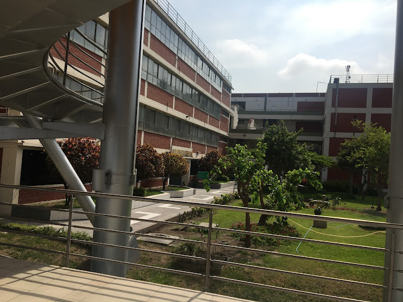

¡Bienvenido a Nuestro Recorrido Virtual de la Facultad de Ingeniería URP!
Somos un equipo de estudiantes dedicados a brindarte una experiencia única de exploración y descubrimiento de nuestra facultad desde cualquier lugar del mundo. Aquí en la Facultad de Ingeniería URP, nos enorgullecemos de ofrecer:
Innovación Educativa: Apostamos por una educación vanguardista, enfocada en el desarrollo integral del estudiante y la excelencia académica.
Experiencia Inmersiva: Sumérgete en nuestros laboratorios especializados, proyectos innovadores y espacios emblemáticos a través de nuestro recorrido virtual en 360 grados.
Enfoque Personalizado: Ofrecemos información detallada sobre programas académicos, vida estudiantil y oportunidades de desarrollo para ayudarte a tomar decisiones informadas sobre tu futuro académico.
Compromiso con la Comunidad: Nuestra facultad no es solo un lugar de estudio, es una comunidad vibrante y en constante evolución donde estudiantes y profesores colaboran en proyectos que impactan el mundo.
¡Únete a nosotros y descubre lo que hace de la Facultad de Ingeniería URP un lugar excepcional para tu desarrollo académico y profesional!

Ingeniería Informática

Conoce nuestras diversas facultades y programas académicos.
La globalización y el empleo de la tecnología de punta forman parte de los temas de mayor interés del mundo moderno.
La Ingeniería Informática cumple un rol protagónico en este escenario, ya que es imposible hablar de globalización sin hablar de Internet, así como hablar de tecnología de punta sin hablar de Sistemas Informáticos; en resumen, el desarrollo del mundo contemporáneo gira en torno al desarrollo de la Computación y el Software. Las grandes innovaciones en medicina, biología, educación, negocios y en casi todo aspecto del quehacer humano, se producen gracias al desarrollo de los sistemas de información que permiten capturar, procesar y compartir la información y el conocimiento con cualquier persona del mundo, todo esto en tiempo real.
En este contexto, la Universidad Ricardo Palma, desde 1997 ofrece la carrera de Ingeniería Informática la que, sobre la base a una cultura de valores, viene formando sólidos profesionales orientados a satisfacer los retos que el mundo de hoy exige y que con gran facilidad se incorporan en posiciones estratégicas del mercado laboral, contribuyendo con sus propuestas innovadoras en el proceso de mejora continua de las organizaciones donde labore.
La Escuela de Ingeniería Informática también está acreditada por ICACIT y SINEACE. Estas acreditadoras aseguran y certifican la calidad de la formación profesional que se refleja a través de la pertinencia del plan de estudios, el reconocimiento y prestigio de la plana docente, la modernidad de los laboratorios y la empleabilidad de los egresados.
Invitamos a todos los que desean asumir el reto de ser Ingenieros Informáticos exitosos a incorporarse a la Escuela de Ingeniería Informática de la URP para que juntos logremos dicho propósito.
Instalaciones
Visita nuestra instalacionas.
BIBLIOTECA CENTRAL
La Biblioteca Central, como entidad de respaldo esencial a las funciones de toda institución dedicada a la enseñanza y la investigación, empezó a brindar sus servicios en el año 1969, el mismo año de la creación de nuestra Universidad Ricardo Palma.
Desde entonces, su capital bibliográfico se ha ido enriqueciendo, no solo como respuesta a las demandas de las nuevas carreras que se han ido creando a lo largo de estos años, sino por constituirse en un centro de consultas de propios y extraños en los diversos campos de la ciencia y la cultura. De esta manera, nuestro legado para las futuras generaciones ya supera, en la actualidad a 81,088 libros, 6,948 anuarios, diccionarios y enciclopedias, 7,171 tesis, 4730 revistas, 1,587 colecciones especiales donadas, registrados e ingresados en el sistema automatizado Absysnet, cifra que sin duda continuará incrementándose en los años venideros
En esta expansión del acervo bibliográfico, es digno de resaltar que nuestra biblioteca haya recibido el legado de libros y revistas de connotados personajes, que han donado sus bibliotecas personales como signo de agradecimiento a la universidad que les brindó la oportunidad de desplegar sus conocimientos y actividades intelectuales.
En este trascendente rol de apoyo a la formación de profesionales y productores de cultura, e investigadores, en un mundo actual, globalizado y regido por cada vez más complejos medios de comunicación y difusión del saber humano, nuestra biblioteca se está adaptando rápidamente a estas nuevas formas de difusión del saber, para lo cual cuenta con diferentes soportes, tanto físicos como digitales, y servicios de información en línea de excelente calidad, que permiten atender las necesidades de la comunidad universitaria. Así, entre otras acciones, desarrollamos permanentemente capacitaciones de manera presencial y vía plataforma Zoom.
Insertándonos de esta manera en el globalizado mundo de la información, esperamos no solo el contacto sino el intercambio cada vez mayor con las bibliotecas universitarias de nuestro país y del mundo.


LABORATORIO DE INFORMÁTICA Y CÓMPUTO
El Laboratorio de Informática y Cómputo de la Facultad de Ingeniería es una dependencia de la Oficina Central de Informática y Cómputo (OFICIC), la tecnología que utilizan los diferentes ambientes del laboratorio son computadoras de última generación DELL y HP, equipos multimedia NEC, sistema de aire acondicionado centralizado LG; software especializado para las carreras de ingeniería; considerados como recursos necesarios para apoyar el desarrollo de competencias cognitivas, experimentales e investigables de nuestra comunidad universitaria.


BIBLIOTECA VIRTUAL DE INGENIERÍA
La Biblioteca Virtual de Ingeniería (BVI) fue creada gracias a la gestión de nuestras autoridades y depende directamente del Sr. Decano de la Facultad de Ingeniería, Dr. Ing. Santiago Fidel Rojas Tuya.
Tiene como visión estar dentro de las mejores Bibliotecas universitarias del mundo, su misión es proveer recursos de calidad y servicios de información actualizada en Internet, a profesores, alumnos, egresados y post graduados de Ingeniería así como, intercambiar información con otras Bibliotecas Virtuales a nivel Nacional e Internacional.
Contamos con las prestigiosas Bases de Datos ProQuest, ACM, Elsevier, Hemeroteca IDG, E-Libro, Eolss y Scirus con documentos a texto completo almacenados en formatos HTML y PDF. Para cada una de las 5 Escuelas profesionales de Ingeniería Civil, Electrónica, Industrial, Informática y Mecatrónica se cuenta con planes de estudios, sílabus, exámenes, directorio de docentes. Asi mismo se puede acceder a enciclopedias, buscadores, traductores, diccionarios, maestrías, doctorados, publicaciones, cursos online, entre los principales servicios.


ANFITEATRO
El Anfiteatro de la Universidad Ricardo Palma es un espacio emblemático que fusiona la arquitectura moderna con la funcionalidad para albergar eventos académicos, culturales y recreativos. Ubicado estratégicamente dentro del campus, este espacio es un centro neurálgico para diversas actividades que enriquecen la vida universitaria.
POLICLÍNICO
El Policlínico de la Universidad Ricardo Palma es un centro médico integral ubicado en la Facultad de Medicina Humana, dedicado a brindar servicios de salud de calidad a la comunidad universitaria y al público en general. Este espacio ofrece atención médica, consultas especializadas y servicios complementarios para promover el bienestar y la salud de quienes lo visitan. Es un componente vital dentro del campus universitario, proporcionando servicios médicos especializados y fomentando un enfoque proactivo hacia la salud entre los estudiantes, el personal académico y la comunidad externa.


Tour 360°
Descubre nuestra Facultad en otra dimensión
Contacto
¿Quieres más información? Contáctanos.
Escuela de Ingeniería Informática
Manchego Quijano Jorge Martin
Mérida Núñez José Gabriel
Monteza Mogollón Fidel Tomás
Estudiantes de Ingeniería Informática
202110494@urp.edu.pe | 202020574@urp.edu.pe | 202012370@urp.edu.pe
922 402 449 | 920664135 | 931 855 058